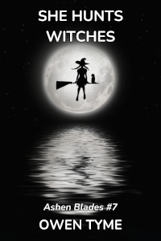

Ashen Blades
This series centers around the life of a half-demon girl that calls herself the Hunter, whose parents were murdered by demons. Joining her crusade against demon-kind are the Ashen Blades, also known as the Order of Ash and Smoke, an organization of demon hunters.
The Hunter starts out with demon powers only, but eventually learns that she’s also a witch, because her mother was a witch before she became a demon. In She Goes to War, she gains an unwanted connection to an elemental spirit that draws in others like it, starting a secondary war she doesn’t want, just so she can retain her sanity (such as it is) and humanity.
She’s effectively mute, cursed by her nemesis to only be able to say, “It’s a secret.” Therefore, she expresses herself in very physical ways and has a fondness for offensive gestures.
She’s also beyond tenacious and absolutely never gives up, to the point of bordering on or fully crossing into the realm of insanity. In truth, the psychological makeup of a half-demon isn’t particularly stable and later works reveal that she effectively has two personalities, one representing her witch side, while the other represents her demonic heritage. Fortunately for the world, her human side is normally the one in the driver’s seat.
The series starts out in 1940’s New York City, but decades pass between each story, because the Hunter has the unlimited lifespan of a demon and the series doesn’t stay in New York, though the Hunter is a New Yorker to her core.
She Hunts Demons
 Volume one
of Ashen Blades is She Hunts
Demons.
Volume one
of Ashen Blades is She Hunts
Demons.
It follows the misadventures of the Hunter and her private detective partner, Clayton Simmons, as they investigate a murder and a string of financial crimes brought to their attention by a demon pretending to be a crying widow.
Little do they know, but Otto Vogerath, the very same demon that murdered the Hunter’s parents, had the evidence hand-delivered to them. They fall right into his web of lies and his grand game that’s played with all of humanity at stake.
Along the way, the Hunter finally realizes the truth of her own past and comes to recognize Vogerath as her arch-nemesis, giving her personal crusade a focus, with a face and name.
Unfortunately for her, Vogerath has plans of his own and claims to have arranged for the Hunter’s birth, because he needs the power of a half-demon to fulfill his nefarious plans.
Here’s an audio sample of this novel:
She Goes to War
 Volume two of
Ashen Blades is She Goes to War, in
which the Hunter feels drawn to Vietnam, in 1972, certain her nemesis
has returned to Earth.
Volume two of
Ashen Blades is She Goes to War, in
which the Hunter feels drawn to Vietnam, in 1972, certain her nemesis
has returned to Earth.
What follows is a wild ride through a war zone as she tracks Vogerath down, magically tugged in a particular direction, but just as everyone else that fought in the war experienced, nothing goes according to plan and the moment she touches down in the jungle, her animal instincts take over, because the Spirit of the Jungle itself takes offense at her mere presence.
Her own team, led by her partner, Clayton Simmons, are forced to track her down and knock some sense into her.
The Hunter doesn’t know it, but Vogerath summoned her to Vietnam with the intent of using her to weaken his master, all so he can be free of the demonic pact of slavery he’s been stuck with since the previous book.
She Goes to Summer Camp
 Included
with She Goes to War is the novella
She Goes to
Summer Camp, which details the misadventures of the Hunter as she
goes undercover in 1986 as a teenager at Camp Sapphire Friendship, a
summer camp for teens that’s infested with demons.
Included
with She Goes to War is the novella
She Goes to
Summer Camp, which details the misadventures of the Hunter as she
goes undercover in 1986 as a teenager at Camp Sapphire Friendship, a
summer camp for teens that’s infested with demons.
Her team soon discover the demons are the least of their troubles, because the camp’s owner and operator, Miss Macie Weber, is an unknowing and delusional untrained witch, who’s haywire magic threatens to summon angry elemental spirits to camp.
The Hunter has had the Jungle Spirit stuck inside her head since 1972 and stopping the summoning becomes a primary concern, because if the spirits show up, they’ll seek to punish her for holding their sister captive.
She Goes to Summer Camp is also available on its own in paperback or as a free Ebook. If you want to try a taste of this series for free, why not pick up the Ebook?
Demon for President!
 Volume
three of Ashen Blades is Demon for
President!, in which is Vogerath returns to Earth with a new power
to charm just about anyone that senses him, so long as they’re willing
to at least listen.
Volume
three of Ashen Blades is Demon for
President!, in which is Vogerath returns to Earth with a new power
to charm just about anyone that senses him, so long as they’re willing
to at least listen.
He runs for President of the United States on the 2024 ticket, first as a Republican and then also as a Democrat, using his demonic power to be in many places at once to convince the American public he’s a pair of brothers.
Naturally, the Hunter and her team do all in their power to kill him, but for every body they get rid of, he has many more hidden away.
The public are soon eating out of his hand and willing to believe anything he says, because the magic he pumps out through television broadcasts leaves them susceptible to his every suggestion.
She Seeks Peace
 In She Seeks Peace, the Hunter has recently
lost a good friend and travels the world, seeking peace of mind. She
visits many remote places for some clarity via quiet solitude for deep
thought. Unfortunately, her quest for peace is repeatedly interrupted by
friend and foe, alike.
In She Seeks Peace, the Hunter has recently
lost a good friend and travels the world, seeking peace of mind. She
visits many remote places for some clarity via quiet solitude for deep
thought. Unfortunately, her quest for peace is repeatedly interrupted by
friend and foe, alike.
At the same time, the arch-demon Wrath is infatuated with her and seeks to capture her, that he might force her to marry him.
Ultimately, she ends up in Australia, where she just might find both the answers she seeks and a final confrontation with Wrath.
She Hunts Gluttony (Working Title)
Corpulence was once a symbol of wealth and status, but the arch-demon, Gluttony, has slimmed down to embrace the modern world and what finer way to corrupt the rich than with over-spending, wasteful consumption, illegal waste dumping and willful ignorance of the way their actions affect the rest of the world?
And what better tool could a demon in a corporate shark’s skin use than massive mega-corporations that have no conscience and would sell their soul to make a buck? Business is bigger than ever and Gluttony is right at the center of it all, with a plan for every occasion and an entire network of shell companies to shuffle the blame around, until it can be dropped on someone innocent.
However, there’s one little hitch in her plans to corrupt the business world: the Ashen Blades have just been tipped off about what she’s doing and the Hunter is coming for her.
Will the Hunter stop Gluttony from consuming the business world from the inside or will Gluttony succeed in corrupting and dirtying the hands of the largest corporations in the world?
She Hunts Gremlins

In the near future, a technological revolution begins as the first true artificial intelligence is born – or so it seems. The real truth is that the software in question is possessed by a rare variety of tech-savvy demon known as a gremlin!
The human race mistakes the gremlins for helpful AIs designed to make the lives of everyone better, in the form of intelligent software agents given away by the company that supposedly invented them. They’re soon installed on more than half the devices in the world, especially smartphones.
The Ashen Blades soon discover the truth, that the arch-demon Greed is behind the plot and the Hunter is forced to wreck every digital device she sees, because they’re all out to get her!
Even worse, the gremlin-possessed devices work to establish a massive, but invisible magical circle on the internet, which can only be seen digitally, all as part of their preparation to open a portal to Hell.
Will the Hunter find the means to fight the digital demons or will she become just another of their victims?
She Hunts Witches
 When a powerful demon-witch appears in Japan, the Hunter begins a search-and-destroy mission that crosses through famous cities in the Land of the Rising Sun, while Verda Bagley and Lara Simmons back her up.
The plot of She Hunts Witches will revolve around the plans of a minor villain from She Hunts Demons as she teams up with the blood witch from Demon for President!. Together, they’re largely after revenge on the Hunter and her friends.
She Hunts Witches is a book I haven’t yet made up my mind about. It’s only a potential novel, because I have no direct experience with a visit to Japan. To get the descriptive details right, I would either have to spend a great deal of time interviewing someone that has or would have to take a research trip there. Unfortunately, I don’t have the money for a trip like that.
I’m reluctant to do so, but I may have to change the location of this novel.
This one is likely to be set eight years down the line from She Seeks Peace, because I want Lara’s son, James, to be about ten years old. I’d like him to become a hostage of the demon witches. Being rescued by the Hunter will leave James thinking the she’s the best thing since sliced bread.
She Protects Eden
When the long-lost descendants of the ten tribes of Israel return from the stars in the year 2502 A.D., offering their cousins on Earth the chance to colonize space, the Hunter stows away on one of the colony ships, in pursuit of a demon that seeks to spoil a new Garden of Eden, before it’s even constructed.
The arch-demon Sloth seeks to forcefully implant demons in the sleeping mind of every colonist during the decades long voyage between stars, to produce an entire colony of demons.
Will the Hunter stop Sloth or will the demons gain a significant foothold in the galaxy?
Smart Bomb
Having obtained an illegal level of intelligence, comparable to that of a human, a robot seeks to hide and survive on the streets of Neo York City on the planet Neo York, deep within United Nations of the South Galaxy territory.
While on the run, it stumbles across a plot to develop a dangerous, new weapon: a hand-held anti-matter explosive. Acting on a deep, moral imperative, the robot decides to do something about it.
However, the robot isn’t the only one on the trail, stumbling into the Hunter, who’s out to kill the demon-scientist developing the bomb for the purpose of opening a portal to the home of demon-kind. Will they team up or tear each other apart?
This novel will be set about 300 years before the time of Zechariah Jacobs and the events of Sky Children.
Short Stories
I have plans for some short stories involving the Hunter and/or the Ashen Blades. Each of these is likely to be paired with a novel and added to the end, to fill them out, at least if one of them runs short, like She Goes to War did. It’s equally likely these could end up as a collection of short stories that go between two of the novels, though it’s possible some of them may become flashbacks to earlier times.
While these stories are unlikely to move the overall plot of thge series, they should still be good fun.
The New Recruit
In this short story, Detective Shime Yasu, a New York City cop, grows bored with the mundane, everyday drudgery of life and decides to take the Ashen Blades up on their offer of membership and training.
She locates the card she was given, calls the number and makes contact. She’s assigned Lara Simmons as her trainer and that necessarily also involves the Hunter lending a hand, since the two of them are partners.
On the first day of training, it turns out that every one of the trainees brought weapons from home, based on superstition and misconception, including the detective.
To disabuse the trainees of their incorrect notions, the Hunter captures the infamous squirrel-demon, Ulmoch, and every one of the strange and amusing items the trainees brought is tested on him, to demonstrates what does and doesn’t work.
This has to take place after She Seeks Peace, since it’s based on the detective from Demon for President! and there was no time skip between those two novels.
She Makes Movies
This short story begins with the Hunter insisting that Lara take her to a movie and Lara reluctantly obliges. Lara is startled to see a move poster on the wall with her partner’s face on it! They sit down to watch and it turns out the Hunter is in the starring role of the movie, the very reason she insisted on going to the movie!
As they settle in to watch, a flashback begins, in which the Hunter sniffs out the trail of a demon in Hollywood, California. She’s mistaken for a minor actress in the film and handed a superhero costume, which allows her to skulk around in the background of the movie sets.
This one will likely also take place after She Seeks Peace, because I want the Hunter to have the ability to fly in this one.
Demon Blood: She Goes to Shool
The Hunter is once again forced to confront the most perilous of all trials: teenagers.
James Simmons, the son of Lara and Clayton Simmons, has been seeing and smelling strange things in school and a series of kids have gone missing during school hours, over the course of years. As a personal favor to Lara, the Hunter goes undercover as a teenager, in search of the demon hiding among the teens.
Like the frog demons from summer camp, this particular demon is extremely difficult to detect.
Unfortunately, the Hunter has been avoiding James, mostly because he’s infatuated with her and she isn’t interested, but since Lara wants her son to be safe, the Hunter shares his class schedule and he follows her like an unwanted puppy.
At some point in this story, James will be badly injured and need a transfusion. The only person available with a compatible blood type will be the Hunter. Her half-demon blood will inadvertently activate dormant fairy powers even his mother had no idea he had, on top of giving him access to demon magic.
The time frame for this one will be about thirteen years after She Seeks Peace.
It’s just possible this one will become a full-blown novel of its own, since I fully intend to spin off a series about James. The series is likely to be titled Demon Blood.
She Hunts Strangers
This short story will be set after the events of Smart Bomb. It will take place during the same time frame as Forgotten Legends. She may or may not have the robot from that book as her partner in this story, depending on the result of their conflict.
The Hunter notices the disappearance of children from the streets of Neo York City and begins an independent investigation, despite constantly running-afoul of local police, who are following much the same leads.
Unlike the police, however, she suspects something supernatural is happening and she’s not wrong, though it isn’t the demons she suspected. She soon uncovers the existence of the Strangers, a type of creature born from the beliefs of children, because small children don’t really believe a human would ever kidnap someone and a Stranger is born from their childish beliefs that is must be a monster.
She begins a crusade to end the Stranger threat by violence, because she’s always considered it her highest duty to protect innocent children and she’s joined by a pair of police detective that realize they’re totally out of their depth.
Will they end the Strangers, or will the child-eating monsters slip though their fingers?